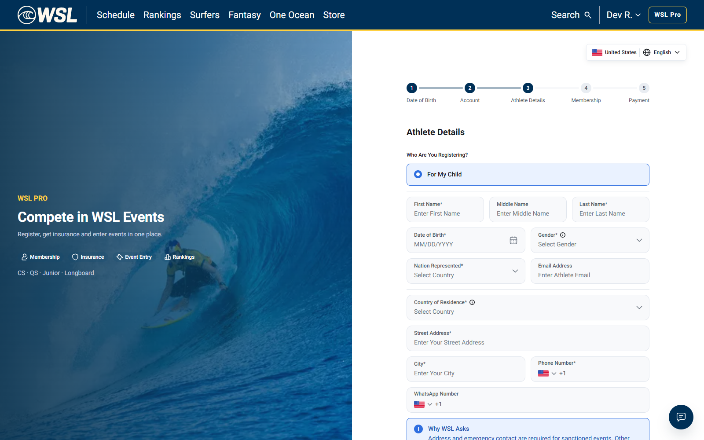

Dev payment and retry rerun
27 October 2026 · app.dev.worldsurfleague.com · all times UTC · Stripe test mode.
New full issue recording — 09:10 UTC
A fresh account was created through the UI. Athlete Details offered only For My Child. A labelled API continuation created the adult athlete (201) and reproduced the documents 503. The full timeline, original/MP4 videos, screenshots and API evidence are available.
Blocked before payment checkout
Two card checks passed: Visa 4242 saved successfully; the insufficient-funds card returned HTTP 402 / insufficient_funds during setup. These are payment-method checks, not successful membership or event-fee charges.
A fresh account and athlete were created, but the membership-documents request returned HTTP 503: “That took too long. Please try again.” at 08:15:46, and again at 2026-10-27T08:18:06.014Z. Event charges, manual retries, recovery and scheduled reminders could not be exercised on that fresh athlete.
Read-only dev logs show NATS permission refused for publish to svc.competition.year_on_sale.get, followed by a 2-second timeout in the athlete-list handler. Pods were Ready, so readiness alone did not establish that this dependency worked. The exact failing permission must be checked by the developers; it was not changed by this test.
Executed and blocked checks
| Check | Result | Details |
|---|---|---|
| Valid Visa 4242 save | PASS | HTTP 200 / succeeded |
| Insufficient-funds card rejected during setup | PASS | Your card has insufficient funds. Use a different payment method to complete this purchase. |
| Fresh account and athlete creation | PASS | |
| Membership documents | BLOCKED | HTTP 503 |
| Membership payment completion | BLOCKED | Documents prerequisite unavailable |
| Confirm & charge / event decline | BLOCKED | No new eligible athlete entry established |
| Manual Retry payment | NOT_RUN | No fresh declined entry exists |
| Valid-card event recovery | NOT_RUN | No fresh declined entry exists |
| Scheduled reminder worker / inbox delivery | NOT_RUN | No fresh declined charge exists; worker not executed |
Full execution ledger · Stripe test-mode setup results · Membership prerequisite request
What happened
Valid-card setup → PASS.
Insufficient-funds setup → expected decline.
Fresh dev account → athlete created → documents request → 503 → checkout blocked → charge/retry/reminder tests not run.
The ordinary insufficient-funds card is rejected while saving. It was not relabelled as an event-fee decline or an automatic-retry test. Stripe test-card reference.
Browser recording and screenshot
The fresh athlete's registration page returns to the Athlete Details step. It does not show a completed membership or payment. The documents 503 is API evidence below; it is not claimed to appear as a visible browser banner.

Browser network and repeated documents check · Recording decoded to EOF
Failed API request
GET https://api.dev.worldsurfleague.com/api/membership/documents?athlete=01a17c6d-3bbe-7705-98e5-3588d944e244
Authentication: the fresh QA athlete's normal signed-in session; credentials omitted.
Request body: none.
Response: HTTP 503
{
"title": "Something is not responding",
"message": "That took too long. Please try again.",
"reason": null,
"fields": {},
"retryable": true
}Account and athlete creation responses · Older QA account session / unavailable-athletes response
Backend evidence
{"ts": "2026-10-27T08:08:58+0000", "level": "ERROR", "logger": "wsl_service_core.nats_options", "msg": "nats permission refused", "service": "athlete", "error": "nats: permissions violation for publish to \"svc.competition.year_on_sale.get\""}
{"ts": "2026-10-27T08:09:00+0000", "level": "WARNING", "logger": "wsl.rpc", "msg": "svc handler failed", "service": "athlete", "subject": "svc.athlete.athlete.list", "correlation_id": "9bd8a327-a471-429a-a3c1-b9402dfdfb6f", "code": "upstream_failed", "retryable": true, "error": "svc.competition.year_on_sale.get did not answer within 2.0s"}
{"ts": "2026-10-27T08:11:27+0000", "level": "WARNING", "logger": "wsl.rpc", "msg": "svc handler failed", "service": "athlete", "subject": "svc.athlete.entry.register", "correlation_id": "d799e4b8-485b-4b6a-a0a0-a51cae094ebc", "code": "forbidden", "retryable": false, "error": "entry.register requires an athlete the caller owns"}
{"ts": "2026-10-27T08:11:27+0000", "level": "WARNING", "logger": "wsl.rpc", "msg": "svc handler failed", "service": "athlete", "subject": "svc.athlete.event.list", "correlation_id": "d799e4b8-485b-4b6a-a0a0-a51cae094ebc", "code": "forbidden", "retryable": false, "error": "event.list requires an athlete the caller owns"}
{"ts": "2026-10-27T08:13:46+0000", "level": "ERROR", "logger": "wsl_service_core.nats_options", "msg": "nats permission refused", "service": "athlete", "error": "nats: permissions violation for publish to \"svc.competition.year_on_sale.get\""}
{"ts": "2026-10-27T08:13:48+0000", "level": "WARNING", "logger": "wsl.rpc", "msg": "svc handler failed", "service": "athlete", "subject": "svc.athlete.athlete.list", "correlation_id": "17a7932c-cae4-4e88-a1a1-66f455f21c24", "code": "upstream_failed", "retryable": true, "error": "svc.competition.year_on_sale.get did not answer within 2.0s"}
{"ts": "2026-10-27T08:15:45+0000", "level": "ERROR", "logger": "wsl_service_core.nats_options", "msg": "nats permission refused", "service": "athlete", "error": "nats: permissions violation for publish to \"svc.competition.year_on_sale.get\""}
{"ts": "2026-10-27T08:15:47+0000", "level": "WARNING", "logger": "wsl.rpc", "msg": "svc handler failed", "service": "athlete", "subject": "svc.athlete.athlete.list", "correlation_id": "0e7d1926-f35b-4af0-a8cc-0049b347cadb", "code": "upstream_failed", "retryable": true, "error": "svc.competition.year_on_sale.get did not answer within 2.0s"}Read-only service log extract and readiness
The older HeavyQA athlete entry returned 403 with an ownership refusal. That fixture was abandoned. The fresh athlete was created successfully and independently hit the documents timeout. These observations are kept separate.
Email capacity
Dev SES has sending enabled and production access: 74 sends / 50000 allowed in the last 24 hours. Unlike staging's earlier quota failure, capacity is available. No payment reminder was triggered or claimed delivered in this run.
Next verification
After dev's athlete-to-competition messaging permission is corrected, verify documents load, complete membership, then create fresh declined event entries for manual retry, valid-card recovery and the scoped reminder timeline. No payment QA sign-off is given by this partial run.
No service configuration, permission, deployment or shared payment rule was changed. One isolated event was opened during setup but received no entry or charge; the fresh athlete and saved test cards remain as QA fixtures.